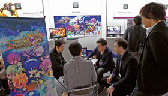
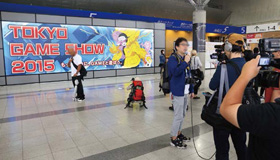
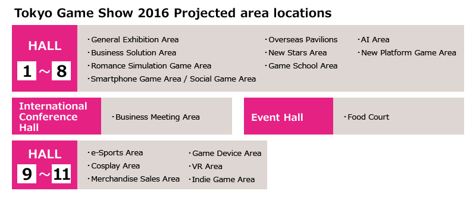

- Business Day
- 2016.9.15[THU]-16[FRI]
- Public Day
- 2016.9.17[SAT]-18[SUN]
- Venue
- Makuhari Messe
Overview
TOP For Exhibitor Overview
- Name:
- TOKYO GAME SHOW 2016
- Period:
- BUSINESS DAYSeptember 15 (Thursday) - September 16 (Friday) From 10:00 a.m. to 5 p.m.
[* Admission is limited to the press, and industrial trade visitors.] PUBLIC DAYSeptember 17 (Saturday) - September 18 (Sunday) From 10:00 a.m. to 5 p.m.
[* The doors may open at 9:30AM depending on the circumstances.] - Venue:
- Makuhari MesseHall 1-11, Event Hall, International Conference Halls
- Organizer:
- Computer Entertainment Supplier's Association (CESA)
- Co-Organizer:
- Nikkei Business Publications, Inc. (Nikkei BP)
- Supporter:
- Ministry of Economy, Trade and Industry (METI) (Tentative)
- Special Supporter:
- DWANGO Co., Ltd.
- Expected # of Visitors:
- 230,000
- Expected # of Booths:
- 2,000 Booths
- Admission Fees:
- On-site: 1,200 JPY (tax-included)/Advance sale: 1,000 JPY (tax-included)
Child(under 12 years old):Free
Tokyo Game Show is the international event gaining attention from all over the world. 246 exhibitors from 37 countries and regions participated in TGS, which exceeded the number of Japanese exhibitors in 2015. Record high number of 1419 editors and writers of 661 press companies from 34 countries and regions attended the show. It shows ever growing recognition and status of TGS as the internationally acclaimed game event. TGS proactively makes progress in relation with the market trend by adapting new tech movement and play style such as VR and e-Sports on the variety of platforms from console, smartphone to PC.
- TGS 2016 enhance the power of promotion and values of exhibit through creating new exhibit areas and related organizer's projects. New VR area will be neighbored with a large scale VR play area. Family Game Park will largely boost the number of game play area hosted by the organizer as well.
- At the Overseas Exhibition Area, in addition to Southeast Asia, where invitations for exhibitions have been promoted, there will be new areas including the "Eastern Europe New Stars Area" and "Latin New Stars Area" for companies in Eastern Europe and Latin America.
- 
- Along with famous media partners from worldwide, DWANGO which hosts the No. 1 live streaming media <niconico> will join as a partner for the first time, which will definitely expand the value of the official video channel of TGS.
- 
TGS use all the hall of Makuhari Messe from hall 1 to hall 11, which will ease the busy condition of the venue. The event Hall between hall 1-8 and hall 9-11 will be the place for the food court and the rest. The location is better for visitors to drop in. Newly starting VR area, merchandise sale area, e-Sports, Game Device, Cosplay and Indie Game area will be located in hall 9-11.
※ Number of hall and final layout will be released at the exhibitor briefing on July.

![Open For Booth Application [Application Deadline] May 31(Tue) [Exhibitor Briefing] July 1(Fri) / Download TGS 2016 Exhibit Data](../common/img/bnr_recruitment.png)